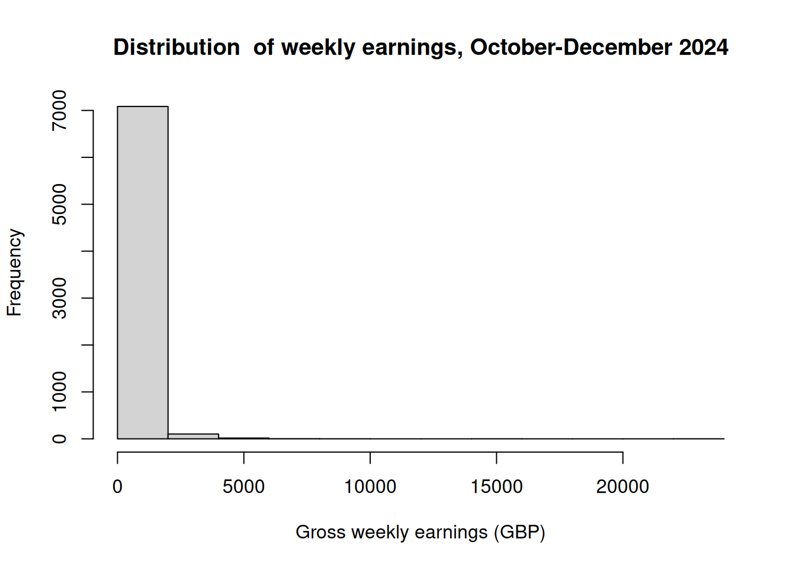
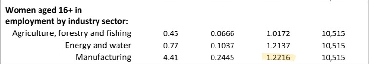

Exercise 4:
Estimate precision and uncertainty
This series of exercises focuses on the precision of estimates produced from Labour Force Survey data—that is, how much the results might vary due to sampling. To explore this, we’ll calculate the same types of measures as before—means and proportions—but this time we’ll pay particular attention to their confidence intervals.
Learning objectives:
- To be able to compute and interpret confidence intervals of earnings in the LFS;
- To be able to assess the impact of weighting on the size of confidence intervals;
- To be able to interpret CIs for regional differences;
- To be able to use published LFS design effects and apply them to your own estimates;
Data
In this exercise we will be using Quarterly LFS data for October-December 2024.
To follow the exercise, you need to access the relevant dataset from the UK Data Service: Quarterly Labour Force Survey, October - December, 2024.
Get set up
We suggest that you create a folder named LFS_exercises as the working directory for this exercise – where syntax files and other materials will be stored. After downloading the data, save it in an easily accessible location within LFS_exercises, such as a subfolder named Data.
First let’s load the packages that we are going to need:
Let’s open the dataset.
As there are many variables in the LFS, let’s create a data frame with just those required for this exercise. We also convert the original variables into factors in order to make them easier to work with.
1. Weighted and unweighted confidence intervals of mean weekly earnings
In this exercise, we will be comparing the mean gross weekly earnings (GRSSWK) and their confidence intervals using weighted and unweighted estimates. As previously, we will be using the weighting variable specifically designed for earnings: PIWT24.
First, let’s examine gross weekly earnings and compute its unweighted mean:
Min. 1st Qu. Median Mean 3rd Qu. Max.
-9.0 -9.0 -9.0 75.8 -9.0 23076.0 Min. 1st Qu. Median Mean 3rd Qu. Max.
5.0 413.2 615.0 732.5 923.0 23076.0 ### Plotting incomes up to the 99th percentile
hist(dataex4$GRSSWK[dataex4$GRSSWK>=0 &
dataex4$GRSSWK<=quantile(dataex4$GRSSWK[dataex4$GRSSWK>=0],.99)],
main= "Distribution of weekly earnings, October-December 2024",
xlab = "Gross Weekly Earnings (£) -- 1st-99th percentiles, Oct-Dec 2024")
[1] 732.4975Let’s now compute the confidence interval. We need to do it by hand, using the standard deviation.
As a reminder, the 95% confidence interval of a mean is the value of the mean plus or minus 1.96 times its standard error. The standard error itself is the standard deviation divided by the square root of the sample size:
se<-s.mw/sqrt(nrow(dataex4[dataex4$GRSSWK>=0,]))
lb<-mw-(1.96*se)
ub<-mw+(1.96*se)
round(c(mw,lb,ub))[1] 732 718 747We could now say - incorrectly - that on the basis of unweighted sample values, we are 95% confident that the overall mean of gross weekly earnings in the UK population ranges between £718 and £747 per week, that is an interval of £29.
Let’s now look at the weighted estimates. We will be using the same survey data specific functions as in previous exercises.
### Let's declare our data to be survey data with PIWT as weight.
dataex4.s<-as_survey_design(weights=PIWT24,dataex4)
### ... Then get the weighted mean
mw.s<-dataex4.s|>
summarise(survey_mean(GRSSWK,vartype = "ci"))
mw.s# A tibble: 1 × 3
coef `_low` `_upp`
<dbl> <dbl> <dbl>
1 694. 682. 706.- What are the bounds between which we can be sure 95% of the values can be found, once we weight the data?
- How wide is the weighted confidence interval?
- What is the effect of weighting the data on the precision of estimates?
- It is between £682 and £706 per week
- £24
- In general, confidence intervals and standard deviations of weighted estimates tend to be wider than those of unweighted estimates, which makes them at the same time more representative but less precise. However, the opposite is true in this case: the weighted confidence intervals of GRSSWK are narrower than the unweighted ones.
2. Part-time female employees across regions
In this second exercise, we will be looking at how to obtain and interpret confidence intervals of proportions by comparing the percentages of part-time female employees in London and the North West of England. First, let’s examine the variable for regions:
[1] North East [2] North West
2597 6748
[4] Yorkshire and Humberside [5] East Midlands
5514 4759
[6] West Midlands [7] East of England
5029 5381
[8] London [9] South East
5456 8831
[10] South West [11] Wales
5832 2576
[12] Scotland [13] Northern Ireland
5125 5221 Let’s recode the missing values in FTPT into system missing and flag the part-time employed.
dataex4$FTPT2<-ifelse(dataex4$FTPT=="[1] Full time" | dataex4$FTPT=="[3] New Deal-FT","Full-time",NA)
dataex4$FTPT2<-ifelse(dataex4$FTPT=="[2] Part time" | dataex4$FTPT=="[4] New Deal-PT","Part-time",dataex4$FTPT2)
dataex4$FTPT2<-as.factor(dataex4$FTPT2)
xtabs(~FTPT+FTPT2,dataex4,drop.unused.levels = T) FTPT2
FTPT Full-time Part-time
[-9] Does not apply 0 0
[-8] No answer 0 0
[1] Full time 22538 0
[2] Part time 0 8314
[3] New Deal-FT 2 0
[4] New Deal-PT 0 1 is.na(FTPT2)
FTPT FALSE TRUE
[-9] Does not apply 0 32189
[-8] No answer 0 25
[1] Full time 22538 0
[2] Part time 8314 0
[3] New Deal-FT 2 0
[4] New Deal-PT 1 0ldn<-dataex4.s |>
filter(SEX=="[2] Female" &
GOVTOF2=="[8] London" &
!is.na(FTPT2)
) |>
group_by(FTPT2) |>
summarise(survey_prop(vartype = "ci")*100)
nw<-dataex4.s |>
filter(SEX=="[2] Female" &
GOVTOF2=="[2] North West" &
!is.na(FTPT2)
) |>
group_by(FTPT2) |>
summarise(survey_prop(vartype = "ci")*100)
ldn ### Results for London # A tibble: 2 × 4
FTPT2 coef `_low` `_upp`
<fct> <dbl> <dbl> <dbl>
1 Full-time 74.3 71.8 76.6
2 Part-time 25.7 23.4 28.2# A tibble: 2 × 4
FTPT2 coef `_low` `_upp`
<fct> <dbl> <dbl> <dbl>
1 Full-time 65.1 62.6 67.6
2 Part-time 34.9 32.4 37.4- Are the width of the confidence intervals for London and The North West comparable?
- Do the CI overlap? How do you interpret this?
- Is it the same with the differences between the North East and the North West of England?
- Yes, they are very close at about 5 percentage points.
- They don’t overlap, meaning that the difference are likely to be significant (at the 95% confidence level) in the population
- The confidence intervals clearly overlap. It is unlikely that significant difference in the proportion of female part-timers significantly differ between the two regions.
3. Adjusting CIs with published design effects
Design effects account for the impact of survey design (e.g., clustering and stratification) on the precision of estimates. Here, we will be adjusting the CI of the proportion of women and men employed (ILODEFR) in manufacturing (INDE07M) in their main job using design effects published in Volume 1 of the LFS documentation.
Let’s begin by examining the sector variable:
cbind(Freq.=table(dataex4$INDE07M[dataex4$ILODEFR=="[1] In employment"]),
Pct.=round(100*
prop.table(
table(dataex4$INDE07M[dataex4$ILODEFR=="[1] In employment"])),
1)
) Freq. Pct.
[-9] Does not apply 29 0.1
[-8] No answer 66 0.2
[1] A - Agriculture, forestry and fishing 346 1.1
[2] B,D,E - Energy and water 520 1.7
[3] C -Manufacturing 2543 8.2
[4] F - Construction 1961 6.3
[5] G,I -Distribution, hotels and restaurants 4747 15.4
[6] H,J -Transport and communication 2883 9.3
[7] K,L,M,N - Banking and finance 5636 18.2
[8] O,P,Q - Public admin, education and health 10490 33.9
[9] R,S,T,U - Other services 1678 5.4Let’s then compute the proportion of men and women employed in manufacturing. We leave out “Does not apply” as system missing but keep the non responses later.
fem<-dataex4.s |>
filter(SEX=="[2] Female" &
ILODEFR=="[1] In employment" &
INDE07M!="[-9] Does not apply") |>
group_by(INDE07M=="[3] C -Manufacturing") |>
summarise(survey_prop(vartype = "ci")*100)
mam<-dataex4.s |>
filter(SEX=="[1] Male" &
ILODEFR=="[1] In employment"&
INDE07M!="[-9] Does not apply") |>
group_by(INDE07M=="[3] C -Manufacturing") |>
summarise(survey_prop(vartype = "ci")*100)… and examine the results for each gender:
- Females
# A tibble: 2 × 4
`INDE07M == "[3] C -Manufacturing"` coef `_low` `_upp`
<lgl> <dbl> <dbl> <dbl>
1 FALSE 95.2 94.8 95.5
2 TRUE 4.82 4.46 5.21- … And males:
# A tibble: 2 × 4
`INDE07M == "[3] C -Manufacturing"` coef `_low` `_upp`
<lgl> <dbl> <dbl> <dbl>
1 FALSE 89.0 88.5 89.5
2 TRUE 11.0 10.5 11.5The above confidence intervals do not take into account the survey design and depending on the variable, maybe too narrow ie overstate the precision of the estimates - or too wide.
In order to compute more robust CIs or standard errors, we need to have access to survey design variables such as strata and primary sampling units identifiers. These are unfortunately withheld by the producers of the LFS due to concerns about potential risk of disclosure of personal information.
Another approach that can be implemented for some headline estimates consists in adapting confidence intervals based on the design factors (DEFF) published by the ONS. These can be found in the Volume 1 of the LFS documentation. For the October-December 2024 edition, this file is called: lfs_user_guide_vol1_background_2024.pdf.


The design effects for the proportion of females and males employed in manufacturing are respectively 1.2216 and 1.3048:


We now need to adapt these to the confidence intervals we computed earlier. In order to do this, we need the original standard errors - as the DEFF are meant to adjust these. We can then obtain the adjusted CIs for females:
sef<-dataex4.s |>
filter(SEX=="[2] Female" &
ILODEFR=="[1] In employment" &
INDE07M!="[-9] Does not apply") |>
group_by(INDE07M=="[3] C -Manufacturing") |>
summarise(survey_prop(vartype = "se")*100)
sef# A tibble: 2 × 3
`INDE07M == "[3] C -Manufacturing"` coef `_se`
<lgl> <dbl> <dbl>
1 FALSE 95.2 0.191
2 TRUE 4.82 0.191round(
c(sef$coef[2],
sef$coef[2]-1.96*sqrt(sef$`_se`[2] * 1.2216),
sef$coef[2]+1.96*sqrt(sef$`_se`[2]*1.2216)
),2
)[1] 4.82 3.88 5.77… Then for males:
sem<-dataex4.s |>
filter(SEX=="[1] Male" &
ILODEFR=="[1] In employment" &
INDE07M!="[-9] Does not apply") |>
group_by(INDE07M=="[3] C -Manufacturing") |>
summarise(survey_prop(vartype = "se")*100)
sem# A tibble: 2 × 3
`INDE07M == "[3] C -Manufacturing"` coef `_se`
<lgl> <dbl> <dbl>
1 FALSE 89.0 0.275
2 TRUE 11.0 0.275round(
c(sem$coef[2],
sem$coef[2]-1.96*sqrt(sem$`_se`[2]*1.2216),
sem$coef[2]+1.96*sqrt(sem$`_se`[2]*1.2216)
),2
)[1] 10.98 9.85 12.12- What has happened to the confidence intervals after we adjusted them?
- What if we wanted to adjust our earlier estimates of gross weekly earnings for the design effects?
- They have widened: from [4.5-5.2] to [3.9-5.8] for women and from [10.5-11.5] to [9.8-12.1] for men, which means that in this case, not taking the survey design led us to overestimate the precision of estimates.
- We would not be able to do this with the safeguarded version of the data as there are no design factors for earnings published by the ONS. We would need to use the secured version of the data, and compute the adjusted estimates ourselves using the appropriate survey functions.